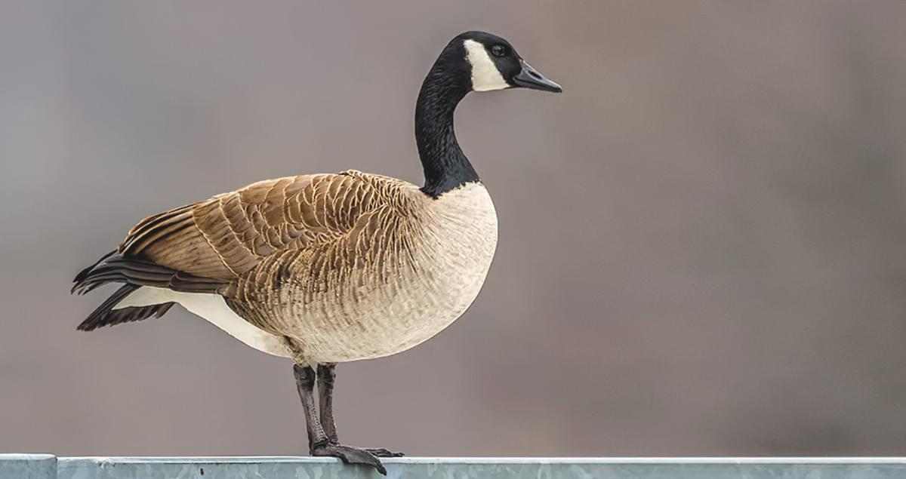

Canada Goose
The Canada goose can be found in a variety of habitats that are located near bodies of water like lakes, marshes, ponds, and rivers. These Geese are also attracted to large grassy areas like parks, golf courses and lawns. Habitats like these provide a variety of food like aquatic plants,seeds,clovers,cultivated grains and grass. When the water freezes over the geese migrate to the bays and inlets of Long Island Sound.
How to identify The Canada goose
The Canada geese are the largest waterfowl species in Connecticut. They weigh between 6-13 pounds and can measure 22 to 48 inches. They are easily recognized by their black head, bill, and a neck. These geese have a distinct white cheek batch that covers the throat and it is a characteristic field mark,these birds also have a pale gray chest. They are gray-brown to dark brown on the back of its wings and white on the belly, they have black tail feathers that are
separated by a narrow band of white feathers.